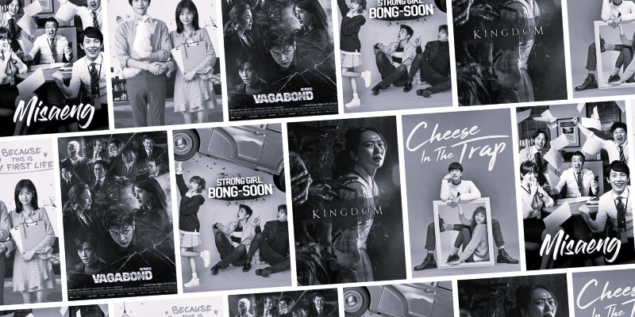
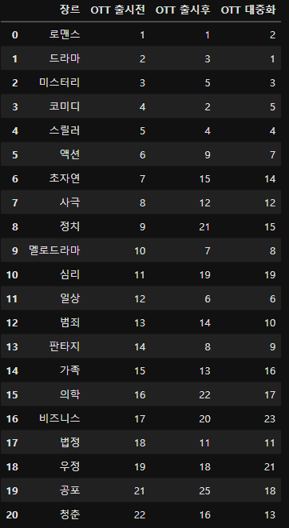

흑백드라마 : 장르의 전쟁
K-드라마의 장르 선호도 변화와 요인 분석
서론
K-드라마는 국내를 넘어 세계가 주목하는 콘텐츠가 되고 있다. 동시에 그 장르 또한 다양화되고 있다.
그렇다면, 이 드라마 장르의 선호도는 무엇의 영향을 받아 변화하는가?

분석 목표
K-드라마 데이터 내 장르 선호도 분석 및 연도별 변화 시각화를 통한 인사이트 습득
- 데이터셋: kdrama.csv
- 라이브러리: numpy, pandas, matplotlib
- 가설 1: OTT에 의한 영향
- 가설2: 사회적 불안 요소에 의한 영향
가설 1. 장르 선호도의 변화는 OTT의 영향이 있을 것이다?
Netflix 등 OTT 서비스의 등장이 선호도 변화에 미치는 영향 분석
기준점 설정
넷플릭스
대표적인 OTT 서비스 '넷플릭스'를 기준으로 데이터셋 분석 시기 설정
- 2010년 ~ 2015년: 넷플릭스 서비스 전
- 2016년 ~ 2018년: 넷플릭스 출시
- 2019년 ~ 2022년: 넷플릭스 대중화
시기별 장르 작품 통계 산출
2010 - 2015 | 2016 - 2018 | 2019 - 2022
각 시기별 특정 장르의 드라마가 몇 편 공개되었는지 집계

통계화
산출한 통계를 바탕으로 작품이 많은 순서대로 서열화
- 총 22개 장르 ROW 도출
- 로맨스/드라마/미스터리/코미디/스릴러의 강세

선호도 컬럼 도출
- 통계 분석 및 시각화를 위한 선호도 컬럼 도출
- "선호도 = (평균 평점) x log(작품 수 + 1)"
분석 1
장르 선호도의 변화는 OTT와 연관이 있을까?
가설 2. 장르 선호도의 변화는 사회적 불안 요소의 영향이 있을 것이다?
사회적 혼란에 따른 드라마 선호도의 변화 분석
기준점 설정
사회적 불안 증가 시점 설정
데이터 내 기간 중 사회적 혼란이 가중되었던 특정 시점을 기준으로 선정해 데이터셋 분석
- 2017년 : 박근혜 전 대통령 탄핵
- 2020년 : 코로나19 팬데믹 시작
- 위 두 시기를 기점으로 전후 데이터 비교 분석
통계화
산출한 통계를 바탕으로 작품이 많은 순서대로 서열화
- 총 25개 장르 ROW 도출
- 로맨스/드라마/미스터리/코미디/스릴러의 강세

선호도 컬럼 도출
- 통계 분석 및 시각화를 위한 선호도 컬럼 도출
- "선호도 = (평균 평점) x log(작품 수 + 1)"
분석 2
장르 선호도의 변화는 사회적 불안 요소와 연관이 있을까?

{kind=link}
{kind=link}
{kind=link}
{kind=link}
{kind=link}
{kind=link}
결론
OTT의 등장 및 사회적 불안 요소는 선호 드라마 장르 변화에 유의미한 영향을 주었는가?
OTT 등장 이전 분석
로맨스/드라마/미스터리/코미디 등 전통적인 TV드라마 장르가 강세를 보이며, 대중적 접근성이 높은 장르 중심으로 높은 선호도가 형성된다.
OTT 등장 이후 분석
로맨스/드라마의 강세가 이어지는 가운데, 스릴러/범죄/SF/판타지의 선호도가 눈에 띄게 상승했다. 이는 넷플릭스의 출범과 함께 다양한 장르의 요구가 증가하고 있음을 알 수 있다.
OTT 대중화 이후 분석
로맨스와 드라마 간 격차가 감소하고, 범죄/스릴러/SF/판타지/액션 장르가 중상위권, 의학/정치 장르 또한 소폭 상승한 선호도를 보였다. 이는 넷플릭스에 의해 분산된 장르 선호도가 본격적으로 나타나는 것으로 볼 수 있다.
탄핵 이전 분석
로맨스/드라마/코미디가 상위권에 위치하는 전형적인 선호도를 보이며, 정치/범죄 장르는 중하위권에 위치한다. 정서적인 안정과 오락성 중심의 선호도를 보인다고 볼 수 있다.
탄핵 이후
탄핵 이전에 비해 범죄/법정/정치 장르 선호도가 눈에 띄게 증가한 것을 볼 수 있다. 이는 사회 현실에 대해 높아진 관심과 문제 의식이 관련 콘텐츠 선호 경향으로 나타났다고 볼 수 있다.
팬데믹 이후
드라마 장르를 제외한 전반적인 장르의 선호도 수치가 낮아진 것을 확인할 수 있다. 이는 팬데믹으로 인한 드라마 제작이 감소한 영향과 더불어, 드라마 외에 다른 콘텐츠에 관심도가 옮겨갔다고 추측할 수 있다.
팀원 소개
프로젝트를 진행한 K-MBL 팀원
Front (HTML/CSS)

이준서
Server (Flask)

박지선
Back (Data Visualization) Front (JS)

문동현
Back (Data analyze)